مقدمه
صنعت تجهیزات پزشکی یکی از پیشرفتهترین و پویاترین صنایع جهان به شمار میرود. رشد سریع فناوریهای سلامت، توسعه تجهیزات تشخیصی و درمانی، گسترش هوش مصنوعی در پزشکی، پیشرفت سامانههای مانیتورینگ بیمار و ظهور فناوریهای نوینی مانند اینترنت اشیای پزشکی (IoMT) و رباتیک جراحی، موجب شده است که دانش و نوآوری به مهمترین عامل موفقیت در این صنعت تبدیل شود.
در چنین شرایطی، دسترسی به منابع علمی معتبر برای پژوهشگران، مهندسان پزشکی، تولیدکنندگان تجهیزات پزشکی، مدیران تحقیق و توسعه (R&D)، دانشجویان و حتی مدیران بیمارستانی اهمیت ویژهای پیدا کرده است. ژورنالهای علمی معتبر، اصلیترین مسیر انتقال دانش، انتشار نتایج تحقیقات و معرفی فناوریهای نوظهور در صنعت تجهیزات پزشکی هستند.
بسیاری از فناوریهایی که امروزه در بیمارستانها مورد استفاده قرار میگیرند، سالها قبل در قالب مقالات علمی در ژورنالهای تخصصی منتشر شدهاند. از تجهیزات تصویربرداری پزشکی گرفته تا سیستمهای کنترل عفونت، حسگرهای زیستی، ایمپلنتهای هوشمند و تجهیزات پزشکی متصل، همگی مسیر توسعه خود را از پژوهشهای علمی آغاز کردهاند.
مطالعه مستمر ژورنالهای معتبر به فعالان صنعت تجهیزات پزشکی کمک میکند تا از آخرین دستاوردهای علمی، فناوریهای نوظهور، استانداردهای بینالمللی و روندهای آینده این صنعت آگاه شوند و تصمیمات آگاهانهتری در حوزه تحقیق، تولید و توسعه محصولات اتخاذ کنند.
چرا آشنایی با ژورنالهای تجهیزات پزشکی اهمیت دارد؟
امروزه فاصله میان تحقیقات دانشگاهی و محصولات تجاری بسیار کمتر از گذشته شده است. شرکتهای پیشرو در صنعت MedTech بهطور مستمر مقالات علمی را رصد میکنند تا بتوانند فناوریهای آینده را شناسایی و در محصولات خود بهکار گیرند.
مطالعه ژورنالهای علمی معتبر مزایای متعددی دارد:
آگاهی از فناوریهای نوظهور
بسیاری از فناوریهای نوین ابتدا در مقالات علمی معرفی میشوند و سالها بعد وارد بازار تجهیزات پزشکی میشوند.
توسعه فعالیتهای تحقیق و توسعه (R&D)
واحدهای تحقیق و توسعه شرکتهای تجهیزات پزشکی از مقالات علمی برای طراحی محصولات جدید و بهبود محصولات موجود استفاده میکنند.
شناخت استانداردها و الزامات جهانی
ژورنالهای علمی معمولاً آخرین دستاوردها و تغییرات مرتبط با استانداردهای بینالمللی را پوشش میدهند.
افزایش کیفیت محصولات پزشکی
مطالعه تحقیقات جدید میتواند به ارتقای ایمنی، کارایی و کیفیت تجهیزات پزشکی کمک کند.
توسعه همکاریهای علمی و صنعتی
ژورنالها بستری برای ارتباط میان دانشگاهها، مراکز تحقیقاتی و صنایع تجهیزات پزشکی ایجاد میکنند.
ژورنالهای معرفیشده چگونه انتخاب شدهاند؟
با توجه به وجود هزاران مجله علمی در حوزه سلامت، انتخاب منابع معتبر اهمیت زیادی دارد. ژورنالهای معرفیشده در این مقاله بر اساس معیارهای زیر انتخاب شدهاند:
- نمایه شدن در Scopus
- نمایه شدن در Web of Science
- اعتبار ناشر بینالمللی
- سابقه انتشار علمی
- میزان استناد پژوهشگران
- تأثیرگذاری در صنعت تجهیزات پزشکی
- جایگاه علمی در حوزه مهندسی پزشکی و فناوری سلامت
هدف این فهرست، معرفی ژورنالهایی است که علاوه بر اعتبار دانشگاهی، در توسعه فناوریهای پزشکی و تجهیزات سلامت نیز نقش مهمی ایفا میکنند.
1. Nature Biomedical Engineering
ناشر
Nature Portfolio
حوزه تخصصی
مهندسی پزشکی، فناوریهای سلامت، بیومتریالها، تجهیزات تشخیصی، پزشکی بازساختی، بیوالکترونیک و فناوریهای درمانی پیشرفته.
معرفی ژورنال
Nature Biomedical Engineering یکی از معتبرترین و تأثیرگذارترین ژورنالهای جهان در حوزه مهندسی پزشکی است. این نشریه از سوی گروه انتشارات Nature منتشر میشود و مقالاتی را پذیرش میکند که دارای نوآوریهای برجسته و اثرگذاری علمی بالا باشند.
این ژورنال پلی میان مهندسی، علوم زیستی و پزشکی ایجاد کرده و بسیاری از فناوریهای نسل آینده پزشکی در آن معرفی میشوند.
چرا مطالعه این ژورنال اهمیت دارد؟
- پوشش فناوریهای آینده پزشکی
- انتشار تحقیقات سطح بالا
- تمرکز بر نوآوریهای تحولآفرین
- مناسب برای فعالان حوزه MedTech
مناسب برای
- پژوهشگران مهندسی پزشکی
- شرکتهای دانشبنیان
- مراکز تحقیق و توسعه تجهیزات پزشکی
- فعالان حوزه سلامت دیجیتال
کشور: بریتانیا
تأسیس: 2017
ISSN (Online): 2157-846X
2. IEEE Transactions on Biomedical Engineering (TBME)
ناشر
Institute of Electrical and Electronics Engineers (IEEE)
حوزه تخصصی
تجهیزات پزشکی، پردازش سیگنالهای زیستی، تصویربرداری پزشکی، حسگرهای پزشکی، سیستمهای مانیتورینگ بیمار و هوش مصنوعی پزشکی.
معرفی ژورنال
TBME یکی از قدیمیترین و معتبرترین ژورنالهای مهندسی پزشکی جهان است که از دهه 1960 منتشر میشود. این مجله یکی از منابع اصلی انتشار تحقیقات مرتبط با طراحی و توسعه تجهیزات پزشکی محسوب میشود.
بسیاری از فناوریهای مورد استفاده در دستگاههای مانیتورینگ، تجهیزات تصویربرداری و سامانههای تشخیصی برای نخستین بار در این ژورنال معرفی شدهاند.
چرا مطالعه این ژورنال اهمیت دارد؟
- مرجع اصلی تحقیقات مهندسی پزشکی
- انتشار فناوریهای کاربردی تجهیزات پزشکی
- پوشش گسترده فناوریهای تشخیصی و درمانی
مناسب برای
- مهندسان پزشکی
- تولیدکنندگان تجهیزات پزشکی
- محققان حوزه حسگرها و مانیتورینگ بیمار
کشور: ایالات متحده آمریکا
تأسیس: 1964
ISSN (Print): 0018-9294
ISSN (Online): 1558-2531
3. Annals of Biomedical Engineering
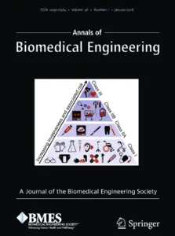
ناشر
Biomedical Engineering Society (BMES)
حوزه تخصصی
بیومکانیک، بیومتریالها، تجهیزات پزشکی، مهندسی بافت و فناوریهای درمانی.
معرفی ژورنال
Annals of Biomedical Engineering یکی از شناختهشدهترین ژورنالهای انجمن مهندسی پزشکی آمریکا است. این مجله طیف گستردهای از موضوعات مهندسی پزشکی را پوشش میدهد و بستری مهم برای انتشار تحقیقات میانرشتهای فراهم کرده است.
ویژگیهای برجسته
- پوشش جامع مهندسی پزشکی
- انتشار تحقیقات کاربردی و بنیادی
- ارتباط نزدیک با جامعه علمی BMES
مناسب برای
- پژوهشگران دانشگاهی
- مهندسان پزشکی
- متخصصان بیومکانیک و بیومتریال
کشور: ایالات متحده آمریکا
تأسیس: 1972
ISSN (Print): 0090-6964
ISSN (Online): 1573-9686
4. Medical Engineering & Physics
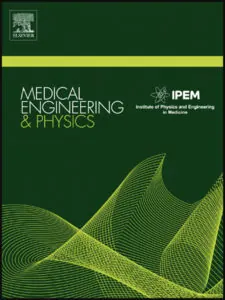
ناشر
Institute of Physics Publishing (IOP) / Elsevier
حوزه تخصصی
کاربرد اصول مهندسی و فیزیک در پزشکی، طراحی تجهیزات پزشکی و فناوریهای تشخیصی.
معرفی ژورنال
این ژورنال یکی از معتبرترین منابع علمی برای پژوهشگرانی است که در مرز میان مهندسی، فیزیک و پزشکی فعالیت میکنند. بسیاری از تحقیقات مرتبط با طراحی تجهیزات پزشکی، مدلسازی سیستمهای زیستی و فناوریهای نوین تشخیصی در این مجله منتشر میشوند.
نقاط قوت
- تمرکز بر کاربردهای عملی مهندسی در پزشکی
- پوشش فناوریهای تشخیصی و درمانی
- انتشار مقالات با رویکرد صنعتی
مناسب برای
- طراحان تجهیزات پزشکی
- مهندسان پزشکی
- محققان فناوری سلامت
کشور: بریتانیا
تأسیس: 1994
ISSN (Print): 1350-4533
ISSN (Online): 1873-4030
5. Journal of Medical Devices
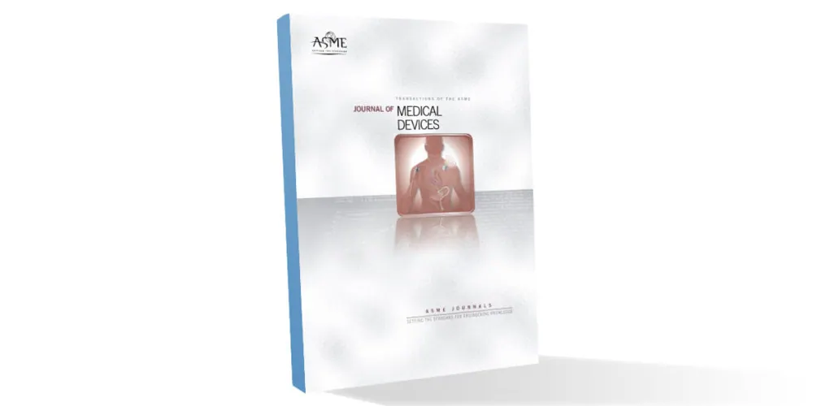
ناشر
American Society of Mechanical Engineers (ASME)
حوزه تخصصی
طراحی، توسعه، ارزیابی و اعتبارسنجی تجهیزات پزشکی.
معرفی ژورنال
Journal of Medical Devices یکی از معدود ژورنالهای علمی جهان است که بهصورت اختصاصی بر طراحی و توسعه تجهیزات پزشکی تمرکز دارد. این نشریه موضوعاتی مانند طراحی محصول، ایمنی تجهیزات، اعتبارسنجی بالینی، مهندسی سیستمهای پزشکی و فناوریهای نوین سلامت را پوشش میدهد.
برای شرکتهای تولیدکننده تجهیزات پزشکی، این ژورنال یکی از ارزشمندترین منابع علمی محسوب میشود؛ زیرا بسیاری از مقالات آن مستقیماً به فرآیند طراحی و توسعه محصول مرتبط هستند.
چرا اهمیت دارد؟
- تمرکز اختصاصی بر تجهیزات پزشکی
- ارتباط مستقیم با صنعت MedTech
- پوشش فرآیند طراحی تا ارزیابی بالینی
مناسب برای
- شرکتهای تولیدکننده تجهیزات پزشکی
- واحدهای تحقیق و توسعه
- مهندسان طراحی محصول
- متخصصان تضمین کیفیت و امور فنی
کشور: ایالات متحده آمریکا
تأسیس: 2007
ISSN (Print): 1932-6181
ISSN (Online): 1932-619X
6. Advanced Healthcare Materials
ناشر
Wiley
حوزه تخصصی
مواد پیشرفته در پزشکی، بیومتریالها، ایمپلنتهای هوشمند، دارورسانی هدفمند، نانومواد پزشکی و مهندسی بافت.
معرفی ژورنال
Advanced Healthcare Materials یکی از ژورنالهای برجسته در حوزه بیومتریال و فناوریهای نوین پزشکی است که بر کاربرد مواد پیشرفته در سلامت انسان تمرکز دارد. این مجله بهطور ویژه به توسعه نسل جدید ایمپلنتها، داربستهای مهندسی بافت، سیستمهای دارورسانی کنترلشده و مواد زیستسازگار میپردازد.
بسیاری از نوآوریهای مرتبط با پزشکی بازساختی و نانوتکنولوژی پزشکی نخستین بار در این ژورنال معرفی شدهاند.
چرا اهمیت دارد؟
- تمرکز بر مواد نسل جدید در پزشکی
- پیوند میان نانوتکنولوژی و تجهیزات پزشکی
- پوشش تحقیقات کاربردی و کلینیکی
مناسب برای
- پژوهشگران بیومتریال
- شرکتهای تولیدکننده ایمپلنت
- فعالان حوزه پزشکی بازساختی
کشور: آلمان
تأسیس: 2012
ISSN (Print): 2192-2640
ISSN (Online): 2192-2659
7. Biomaterials
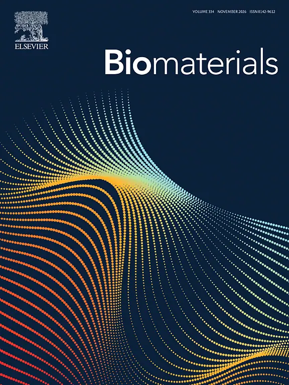
ناشر
Elsevier
حوزه تخصصی
بیومتریالها، ایمپلنتهای پزشکی، مهندسی بافت، سطح مواد زیستی و تعامل سلول با مواد.
معرفی ژورنال
Biomaterials یکی از معتبرترین و پرارجاعترین ژورنالهای جهان در زمینه مواد زیستی است. این نشریه بر تعامل بین مواد و سیستمهای زیستی تمرکز دارد و نقش مهمی در توسعه ایمپلنتهای پزشکی و فناوریهای ترمیم بافت ایفا کرده است.
این ژورنال یکی از منابع اصلی برای درک رفتار مواد در بدن انسان و طراحی تجهیزات پزشکی سازگار با زیستمحیط بدن محسوب میشود.
چرا اهمیت دارد؟
- مرجع اصلی در حوزه بیومتریال
- انتشار تحقیقات بنیادی و کاربردی
- نقش کلیدی در توسعه ایمپلنتها
مناسب برای
- مهندسان مواد
- پژوهشگران مهندسی پزشکی
- توسعهدهندگان ایمپلنتهای پزشکی
کشور: بریتانیا (ناشر Elsevier، مستقر در هلند)
تأسیس: 1980
ISSN (Print): 0142-9612
ISSN (Online): 1878-5905
8. Computers in Biology and Medicine
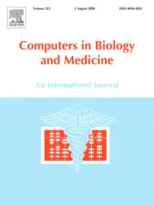
ناشر
Elsevier
حوزه تخصصی
هوش مصنوعی در پزشکی، پردازش دادههای زیستی، سیستمهای تشخیص پزشکی، مدلسازی محاسباتی و سلامت دیجیتال.
معرفی ژورنال
این ژورنال یکی از مهمترین منابع علمی در حوزه کاربرد محاسبات و هوش مصنوعی در پزشکی است. مقالات آن شامل الگوریتمهای تشخیص بیماری، تحلیل سیگنالهای زیستی، پردازش تصویر پزشکی و سیستمهای تصمیمیار بالینی است.
با رشد سریع هوش مصنوعی در پزشکی، اهمیت این ژورنال روزبهروز بیشتر میشود.
چرا اهمیت دارد؟
- تمرکز بر AI در پزشکی
- پوشش تصویربرداری و تحلیل دادههای پزشکی
- ارتباط مستقیم با سلامت دیجیتال
مناسب برای
- توسعهدهندگان هوش مصنوعی پزشکی
- مهندسان دادههای زیستی
- پژوهشگران سلامت دیجیتال
کشور: بریتانیا (ناشر Elsevier، مستقر در هلند)
تأسیس: 1970
ISSN (Print): 0010-4825
ISSN (Online): 1879-0534
9. Journal of Clinical Engineering
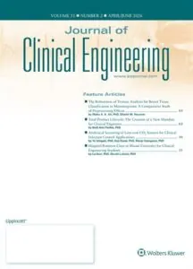
ناشر
Journal of Clinical Engineering
حوزه تخصصی
مهندسی بالینی، مدیریت و نگهداری تجهیزات پزشکی، ایمنی بیمار، ارزیابی عملکرد دستگاههای پزشکی.
معرفی ژورنال
این ژورنال بر نقش مهندسان بالینی در بیمارستانها و مراکز درمانی تمرکز دارد. موضوعات آن شامل نگهداری پیشگیرانه تجهیزات پزشکی، مدیریت چرخه عمر دستگاهها، ایمنی تجهیزات و بهینهسازی عملکرد سیستمهای پزشکی است.
در واقع این مجله بیشتر به کاربرد عملی تجهیزات پزشکی در محیط واقعی بیمارستانی میپردازد تا صرفاً توسعه فناوری.
چرا برای صنعت تجهیزات پزشکی مهم است؟
- زیرا مستقیماً با عملکرد واقعی تجهیزات در بیمارستانها مرتبط است
- کمک به افزایش ایمنی بیمار و کاهش خطاهای تجهیزات
- بهینهسازی هزینههای نگهداری و تعمیرات
- ارائه دادههای واقعی برای بهبود طراحی محصولات آینده
مناسب برای
- مهندسان بالینی
- مدیران تجهیزات پزشکی بیمارستانها
- شرکتهای خدمات پس از فروش تجهیزات پزشکی
کشور: ایالات متحده آمریکا
تأسیس: 1976
ISSN (Print): 0363-8855
ISSN (Online): 1538-2817
10. Expert Review of Medical Devices
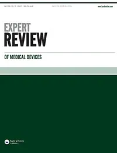
ناشر
Taylor & Francis
حوزه تخصصی
بررسی تخصصی تجهیزات پزشکی، تحلیل فناوریهای جدید، ارزیابی عملکرد دستگاهها، تحلیل بازار MedTech.
معرفی ژورنال
این ژورنال یکی از منابع مهم برای بررسی انتقادی و تخصصی تجهیزات پزشکی جدید است. مقالات آن معمولاً به صورت Review منتشر میشوند و به تحلیل مزایا، محدودیتها و کاربردهای فناوریهای نوین میپردازند.
این مجله برای تصمیمگیران صنعتی بسیار ارزشمند است زیرا دیدگاه تحلیلی نسبت به فناوریها ارائه میدهد.
چرا برای صنعت تجهیزات پزشکی مهم است؟
- کمک به انتخاب فناوریهای مناسب برای توسعه محصول
- ارزیابی نقاط قوت و ضعف تجهیزات جدید
- راهنمایی برای سرمایهگذاری در فناوریهای MedTech
- مناسب برای تصمیمگیریهای استراتژیک شرکتها
مناسب برای
- مدیران شرکتهای تجهیزات پزشکی
- تحلیلگران بازار MedTech
- تیمهای R&D
کشور: بریتانیا
تأسیس: 2004
ISSN (Print): 1745-2422
ISSN (Online): 1745-2430
11. Medical Devices: Evidence and Research
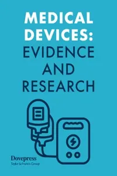
ناشر
Dove Medical Press
حوزه تخصصی
شواهد بالینی تجهیزات پزشکی، ارزیابی اثربخشی، مطالعات کاربردی در محیط واقعی.
معرفی ژورنال
این ژورنال بر ارائه شواهد علمی درباره عملکرد واقعی تجهیزات پزشکی تمرکز دارد. برخلاف بسیاری از مجلات نظری، این نشریه بیشتر بر دادههای بالینی و کاربردی تمرکز دارد.
هدف آن بررسی این است که آیا یک دستگاه پزشکی در شرایط واقعی بیمارستانی همان عملکرد ادعا شده را دارد یا خیر.
چرا برای صنعت تجهیزات پزشکی مهم است؟
- تأیید عملکرد واقعی محصولات پزشکی
- افزایش اعتماد بازار و کاربران به تجهیزات
- کمک به اخذ مجوزهای قانونی و استانداردها
- ارائه دادههای بالینی برای بهبود طراحی محصول
مناسب برای
- شرکتهای تولید تجهیزات پزشکی
- نهادهای رگولاتوری
- پژوهشگران بالینی
کشور: بریتانیا
تأسیس: 2008
ISSN (Online): 1179-1470
12. Biomedical Microdevices
ناشر
Springer Nature
حوزه تخصصی
میکروتکنولوژی پزشکی، میکروسیالات (Microfluidics)، Lab-on-a-Chip، سنسورهای زیستی میکرو.
معرفی ژورنال
Biomedical Microdevices یکی از ژورنالهای تخصصی در حوزه فناوریهای میکرو و نانو در پزشکی است. این مجله به توسعه دستگاههای بسیار کوچک پزشکی که برای تشخیص سریع، آزمایشهای آزمایشگاهی روی چیپ و حسگرهای زیستی استفاده میشوند، میپردازد.
این حوزه یکی از سریعترین بخشهای در حال رشد در صنعت MedTech است.
چرا برای صنعت تجهیزات پزشکی مهم است؟
- مبنای توسعه تجهیزات تشخیص سریع و قابل حمل
- کاهش هزینه و زمان آزمایشهای پزشکی
- ورود به نسل جدید تشخیصهای Point-of-Care
- افزایش دقت در تستهای زیستی
مناسب برای
- توسعهدهندگان Lab-on-a-Chip
- شرکتهای بیوتکنولوژی
- پژوهشگران نانوپزشکی
کشور: ایالات متحده آمریکا
تأسیس: 1998
ISSN (Print): 1387-2176
ISSN (Online): 1572-8781
13. Journal of Biomedical Materials Research
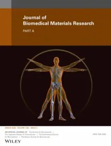
ناشر
Wiley
حوزه تخصصی
بیومتریالها، مهندسی بافت، ایمپلنتهای پزشکی، تعامل مواد با بدن انسان.
معرفی ژورنال
این ژورنال یکی از قدیمیترین و معتبرترین منابع در زمینه مواد زیستی است و به بررسی رفتار مواد در محیط زیستی بدن انسان میپردازد. موضوعاتی مانند طراحی ایمپلنت، مواد زیستسازگار و بازسازی بافت در این مجله منتشر میشود.
این مجله نقش مهمی در توسعه نسل جدید ایمپلنتها و مواد پزشکی ایفا کرده است.
چرا برای صنعت تجهیزات پزشکی مهم است؟
- مبنای علمی طراحی ایمپلنتهای پزشکی
- افزایش ایمنی و سازگاری تجهیزات با بدن
- کاهش رد ایمپلنت توسط سیستم ایمنی
- توسعه محصولات نوآورانه در پزشکی بازساختی
مناسب برای
- شرکتهای ایمپلنتسازی
- پژوهشگران مهندسی پزشکی
- توسعهدهندگان بیومتریال
کشور: ایالات متحده آمریکا
تأسیس: 1967
ISSN (Print): 0021-9304
ISSN (Online): 1097-4636
14. Medical Physics
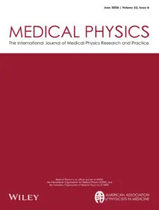
ناشر
AIP Publishing / American Association of Physicists in Medicine (AAPM)
حوزه تخصصی
فیزیک پزشکی، تصویربرداری پزشکی، پرتودرمانی، دوزیمتری، فناوریهای رادیولوژی و سیستمهای تشخیصی.
معرفی ژورنال
Medical Physics یکی از معتبرترین ژورنالهای حوزه فیزیک کاربردی در پزشکی است. این مجله بر فناوریهای تصویربرداری مانند MRI، CT، PET و همچنین درمانهای مبتنی بر پرتو تمرکز دارد.
چرا برای صنعت تجهیزات پزشکی مهم است؟
- پایه علمی دستگاههای تصویربرداری پزشکی
- بهبود دقت و ایمنی پرتودرمانی
- ارتقای کیفیت تجهیزات رادیولوژی
- مناسب برای طراحی نسل جدید دستگاههای تشخیصی
مناسب برای
- مهندسان تصویربرداری پزشکی
- شرکتهای تولید تجهیزات رادیولوژی
- متخصصان فیزیک پزشکی
کشور: ایالات متحده آمریکا
تأسیس: 1974
ISSN (Print): 0094-2405
ISSN (Online): 2473-4209
15. Journal of Biomedical Informatics
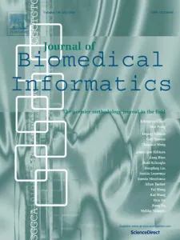
ناشر
Elsevier
حوزه تخصصی
هوش مصنوعی در سلامت، تحلیل دادههای پزشکی، سیستمهای اطلاعات سلامت، تصمیمیارهای بالینی.
معرفی ژورنال
این ژورنال یکی از مهمترین منابع در حوزه انفورماتیک پزشکی است و بر تحلیل دادههای بزرگ سلامت، الگوریتمهای تصمیمگیری و سیستمهای هوشمند بیمارستانی تمرکز دارد.
چرا برای صنعت تجهیزات پزشکی مهم است؟
- پایه توسعه سیستمهای هوشمند بیمارستانی
- کمک به طراحی تجهیزات متصل (Connected Devices)
- بهبود تصمیمگیری بالینی با AI
- مناسب برای توسعه نرمافزارهای پزشکی
مناسب برای
- شرکتهای HealthTech
- توسعهدهندگان AI پزشکی
- مدیران سیستمهای اطلاعات بیمارستانی
کشور: ایالات متحده آمریکا
تأسیس: 1968
ISSN (Print): 1532-0464
ISSN (Online): 1532-0464
16. Sensors
ناشر
MDPI
حوزه تخصصی
حسگرهای زیستی، اینترنت اشیای پزشکی (IoMT)، سیستمهای مانیتورینگ، سنسورهای پوشیدنی.
معرفی ژورنال
Sensors یکی از ژورنالهای بسیار پرکاربرد در حوزه فناوری حسگرها است که طیف گستردهای از کاربردهای پزشکی و صنعتی را پوشش میدهد. این مجله بهطور ویژه بر توسعه سنسورهای هوشمند و پوشیدنی تمرکز دارد.
چرا برای صنعت تجهیزات پزشکی مهم است؟
- پایه توسعه تجهیزات پوشیدنی پزشکی
- کلیدی در IoMT و بیمارستان هوشمند
- افزایش قابلیت مانیتورینگ لحظهای بیمار
- مناسب برای محصولات دیجیتال سلامت
مناسب برای
- شرکتهای تجهیزات پوشیدنی
- توسعهدهندگان IoT پزشکی
- مهندسان الکترونیک پزشکی
کشور: سوئیس
تأسیس: 2001
ISSN (Online): 1424-8220
17. IEEE Journal of Biomedical and Health Informatics (JBHI)
ناشر
IEEE
حوزه تخصصی
هوش مصنوعی پزشکی، تحلیل سیگنالهای زیستی، یادگیری ماشین در سلامت، سیستمهای سلامت دیجیتال.
معرفی ژورنال
این ژورنال یکی از مهمترین منابع IEEE در حوزه سلامت دیجیتال است و بر ترکیب مهندسی، داده و پزشکی تمرکز دارد. مقالات آن شامل الگوریتمهای پیشرفته تشخیص بیماری و سیستمهای هوشمند سلامت است.
چرا برای صنعت تجهیزات پزشکی مهم است؟
- پایه علمی تجهیزات مبتنی بر AI
- توسعه سیستمهای تشخیص هوشمند
- ارتقای دقت تحلیل دادههای پزشکی
- مناسب برای نسل جدید MedTech دیجیتال
مناسب برای
- توسعهدهندگان AI پزشکی
- شرکتهای HealthTech
- مهندسان داده پزشکی
کشور: ایالات متحده آمریکا
تأسیس: 2013
ISSN (Print): 2168-2194
ISSN (Online): 2168-2208
18. Artificial Organs
ناشر
Wiley
حوزه تخصصی
اندامهای مصنوعی، ایمپلنتهای پیشرفته، دستگاههای جایگزین عملکرد اندامها مانند قلب مصنوعی و کلیه مصنوعی.
معرفی ژورنال
این ژورنال به توسعه و ارزیابی اندامهای مصنوعی و سیستمهای جایگزین عملکرد بدن انسان میپردازد. یکی از حوزههای بسیار پیشرفته و حیاتی در مهندسی پزشکی محسوب میشود.
چرا برای صنعت تجهیزات پزشکی مهم است؟
- پایه توسعه قلب و اندام مصنوعی
- افزایش کیفیت زندگی بیماران مزمن
- توسعه فناوریهای نجاتبخش
- مناسب برای ایمپلنتهای پیشرفته پزشکی
مناسب برای
- شرکتهای تجهیزات ایمپلنت
- پژوهشگران بیومکانیک
- توسعهدهندگان اندامهای مصنوعی
کشور: ژاپن
تأسیس: 1977
ISSN (Print): 0160-564X
ISSN (Online): 1525-1594
19. Journal of Healthcare Engineering
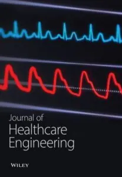
ناشر
Hindawi (اکنون تحت مالکیت Wiley)
حوزه تخصصی
مهندسی بیمارستان، طراحی سیستمهای سلامت، بهینهسازی تجهیزات پزشکی، مدیریت فناوری سلامت.
معرفی ژورنال
این ژورنال بر مهندسی سیستمهای سلامت و بهینهسازی زیرساختهای بیمارستانی تمرکز دارد. موضوعات آن شامل طراحی بیمارستان هوشمند، مدیریت تجهیزات و بهینهسازی عملکرد سیستمهای درمانی است.
چرا برای صنعت تجهیزات پزشکی مهم است؟
- بهبود طراحی بیمارستانهای هوشمند
- افزایش بهرهوری تجهیزات پزشکی
- کاهش هزینههای عملیاتی مراکز درمانی
- مناسب برای مدیریت فناوری سلامت
مناسب برای
- مدیران بیمارستانها
- شرکتهای تجهیزات پزشکی
- مهندسان سیستمهای سلامت
کشور: ایالات متحده آمریکا
تأسیس: 2010
ISSN (Online): 2040-2295
20. Acta Biomaterialia
ناشر
Elsevier
حوزه تخصصی
بیومتریالهای پیشرفته، تعامل مواد با بافتهای زنده، ایمپلنتها، پزشکی بازساختی.
معرفی ژورنال
Acta Biomaterialia یکی از معتبرترین ژورنالهای جهان در حوزه مواد زیستی است که بر طراحی و تحلیل مواد سازگار با بدن انسان تمرکز دارد. این مجله نقش مهمی در توسعه فناوریهای ایمپلنت و مهندسی بافت دارد.
چرا برای صنعت تجهیزات پزشکی مهم است؟
- مبنای طراحی نسل جدید ایمپلنتها
- افزایش سازگاری زیستی تجهیزات
- توسعه پزشکی بازساختی
- ارتباط مستقیم با صنعت تولید ایمپلنت
مناسب برای
- تولیدکنندگان ایمپلنت
- پژوهشگران مواد پزشکی
- شرکتهای MedTech
کشور: بریتانیا
تأسیس: 2005
ISSN (Print): 1742-7061
ISSN (Online): 1878-7568
جمعبندی نهایی مقاله
در این مقاله، ۲۰ ژورنال معتبر و تأثیرگذار در حوزه تجهیزات پزشکی و مهندسی پزشکی معرفی و بررسی شدند که از معتبرترین پایگاههای علمی بینالمللی از جمله Scopus، Web of Science، IEEE، Springer، Wiley و Elsevier انتخاب شدهاند. این ژورنالها طیف گستردهای از حوزههای تخصصی شامل مهندسی پزشکی، بیومتریالها، تجهیزات پزشکی، هوش مصنوعی در سلامت، تصویربرداری پزشکی، فیزیک پزشکی، سلامت دیجیتال و فناوریهای نوین درمانی را پوشش میدهند.
بررسی این منابع نشان میدهد که صنعت تجهیزات پزشکی بهطور مستقیم بر پایه تحقیقات علمی و انتشار دانش در ژورنالهای معتبر بینالمللی توسعه مییابد و مسیر نوآوری در این صنعت، از دانشگاه و مراکز تحقیقاتی آغاز شده و به محصولات تجاری و کاربردی در بیمارستانها ختم میشود.
در دنیای امروز که فناوریهای نوین مانند هوش مصنوعی، اینترنت اشیای پزشکی (IoMT)، تجهیزات هوشمند و سیستمهای سلامت دیجیتال به سرعت در حال رشد هستند، دسترسی به دادههای علمی بهروز و تحلیل مستمر مقالات پژوهشی، یک عامل کلیدی در موفقیت شرکتهای فعال در این حوزه محسوب میشود.
در همین راستا، شرکت مخازن طبی آبادیس با رویکردی مبتنی بر دانش و نوآوری، اهمیت ویژهای برای پایش مستمر منابع علمی معتبر قائل است. استفاده از دادههای بهروز علمی در فرآیندهای تحقیق و توسعه (R&D)، طراحی محصول و تصمیمگیریهای فنی، موجب افزایش کیفیت، بهبود عملکرد و همگامسازی محصولات این شرکت با استانداردهای جهانی شده است.
در نتیجه، میتوان گفت که همراستایی با آخرین یافتههای علمی منتشرشده در ژورنالهای معتبر بینالمللی، نقش اساسی در ارتقای جایگاه شرکتهای فعال در صنعت تجهیزات پزشکی دارد و بهروزرسانی مداوم دانش، یکی از مهمترین مزیتهای رقابتی در این صنعت به شمار میرود.
منابع
- National Library of Medicine (PubMed)
- Scopus Database (Elsevier)
- Web of Science Core Collection (Clarivate)
- IEEE Publications Database
- Nature Portfolio Journals
- Springer Nature Journals
- Elsevier Medical Engineering Journals
- Wiley Biomedical Engineering Publications
- BMES – Biomedical Engineering Society
- ASME Journal of Medical Devices